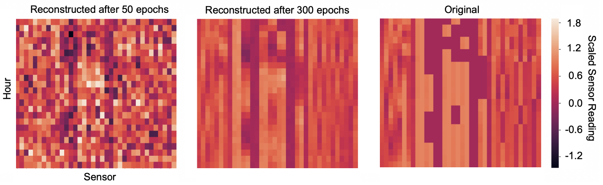

Somebody poisoned the waterhole!
As a summer 2018 SULI intern at Oak Ridge National Laboratory, I simulated synthetic cyber-attacks on water distribution systems with naïve augmentations of sensor data. Then I performed deep transfer learning on synthetic-attack data to detect real cyber-attacks.
These two graduate projects extend my previous work by first replacing the naïve attack engine with deep learning, then with network interdiction.
Deliverable downloads:
- ORNL poster, cleared for external circulation
- Deep learning report
- Network interdiction report
6.883 Modeling with Machine Learning:
From Algorithms to Applications Spring 2019
In my final project for this course, I built an adversarial variational autoencoder (VAE) to generate synthetic attacks. The adversarial VAE variant includes a second neural network branch from the latent space whose task is to classify the reconstructed sensor readings as clean or compromised. The loss function is a linear combination of KL-divergence and binary cross-entropy to enforce smooth and clustered encoding.

This approach achieved slight attack detection improvement over the naïve engine.
1.208 Resilient Networks
Fall 2020
In this course’s final project I turned to network interdiction models to add domain-specific knowledge for synthetic attack generation. I used network interdiction outcomes to identify critical links or network components which an attacker might target to maximize the effect of a single cyber-layer interference. These targeted links were translated into a distribution over the water distribution network’s cyber components. I used this distribution to model a potential adversary’s topological priorities.
I generated synthetic attacks over the cyber components proportionally to the simulated component priority distributions. The results indicated that topology-informed synthetic attacks enable more sensitive, more specific, and less paranoid detection of true cyber-attacks than the topology-agnostic attack engines.